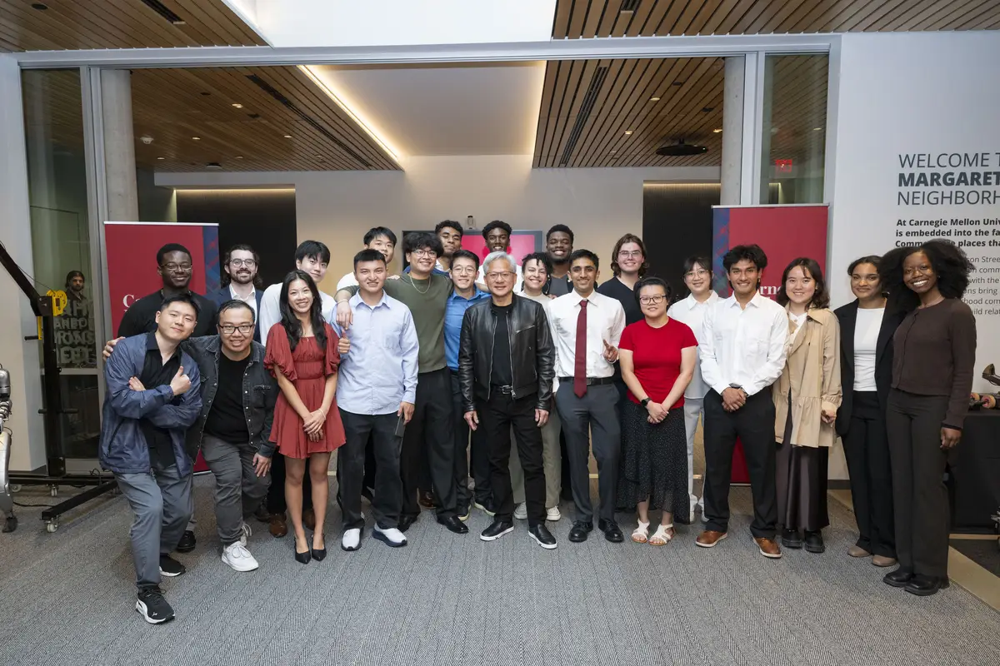
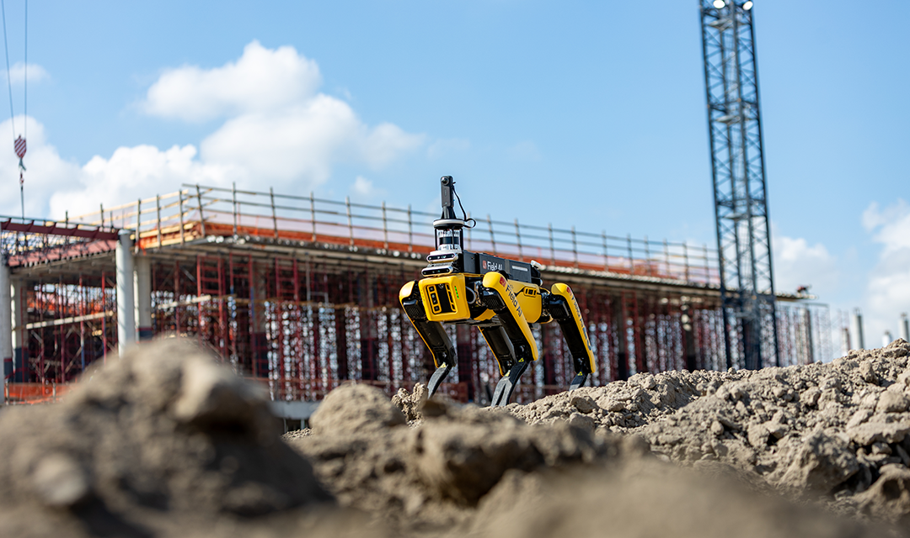

I'm a second-year Master's student on the Mechanical Engineering Research track at Carnegie Mellon University. My research in the Robomechanics Lab, advised by Prof. Aaron Johnson, involves robot simulation and reinforcement learning. I am working on developing robust control policies for quadruped locomotion over complex, contact-rich natural environments.
Before CMU, I earned a B.E. in Mechanical Engineering at Stevens, where I worked with Prof. Kishore Pochiraju on implementing computer vision for robot manipulation pick and place tasks. Outside the lab, I enjoy spending my time woodworking and cooking delicious food.

What I've been up to
-
May 2026
I met Jensen Huang, the founder and CEO of NVIDIA, at Carnegie Mellon's pre-commencement and had the opportunity to share how I am utilizing Nvidia Omniverse in my research. CMU News

-
May 2026
My research on training adaptive policies for quadruped robots to traverse muddy terrain, conducted in collaboration with FieldAI, was featured in a CMU Engineering article. CMU Engineering

Work Experience
Education
Selected projects

SLAM and FSD for a Tesla Model 3
PID, LQR and MPC controllers compared in Webots, with A* replanning and EKF SLAM.

Pick and Place Camera Algorithm
YOLOv8 model driving a Doosan H2515 arm over a TCP client-server link.

LeRobot Hackathon — SO-100
Filtering and frame skipping doubled task speed. Won Most Innovative Use of Data.

Resolved Rates and Manipulation
Null-space projection and min-norm pseudoinverse redundancy resolution in MATLAB.

SLAM and RRT Planning
Sampling-based planning with Kalman-filtered uncertainty along the trajectory.

Extracurricular work
Gold nanoparticle research, woodworking, machining, and other side quests.